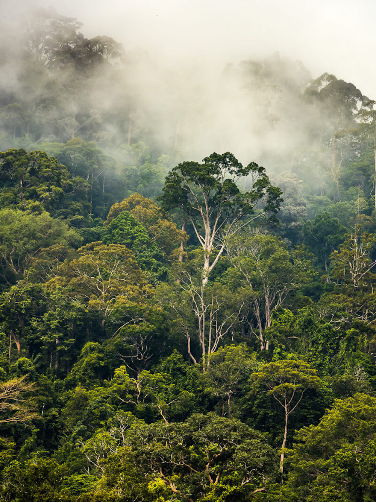
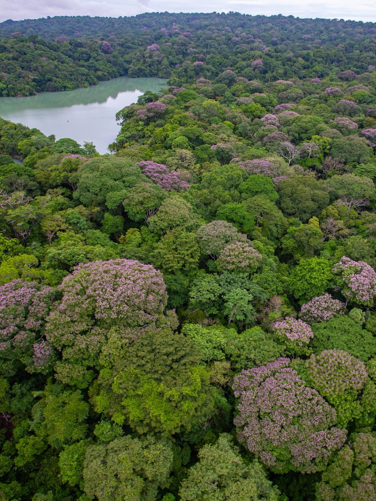

research
A bit about my current research projects.
restoration of logged tropical forests
 Selectively logging tropical forests by harvesting the most valuable tree species depletes the forest’s biodiversity. This loss of diversity is concerning because recent research has shown that in many ecosystems diversity plays an important role in supporting a range of ecosystem functions, including primary productivity and resilience to disturbance.
In my postdoctoral research with Prof. Andy Hector, we will use long-term field data from the Sabah Biodiversity Experiment and Danum Valley ForestGeo plot with repeat airborne LiDAR surveys to understand how tree diversity influences productivity in SE Asian rainforests and how it could be harnessed to improve restoration and carbon sequestration.
context-dependence and precision approaches in ecology
Despite ecosystems being incredibly complex and changeable, conservation and management decisions for ecosystems are often based on the results of meta-analyses which average effects across heterogeneous populations. To make accurate predictions about the effects of actions on individual systems we need to take a more individualised approach.
In my postdoctoral research with Dr Becks Spake, we are leveraging novel machine learning methods for individual-effect prediction, which were pioneered in the fields of medicine and marketing, and applying them to an ecological question. Using simulations of soil carbon responses to alternative management actions across Sweden, we are taking a virtual ecologist approach to identify how sampling and modelling decisions could influence the accuracy of individual-effect predictions.
seed natural enemies and forest plant diversity
 High local species richness in tropical forests poses a challenge to general ecological theory, where competition for resources limits local alpha diversity through competitive exclusion. The Janzen-Connell hypothesis proposes that coexistence is achieved through the role of specialist plant enemies, which reduce recruitment close to reproductive adults of the same species and in areas of high conspecific density.
To date, research has focused almost exclusively on enemies attacking seeds after dispersal. However, we don’t know much about the fate of seeds that are still developing and attached to the parent plant. Pre-dispersal seed predation could cause a reduction in the number of seeds that are successfully dispersed, with unknown consequences for plant diversity maintenance.
My doctoral research with Dr Sofia Gripenberg aims to investigate the role of pre-dispersal seed enemies in plant diversity maintenance using a combined approach of on-the-ground field studies with analysis of long-term forest monitoring data from Barro Colorado Island, Panama.